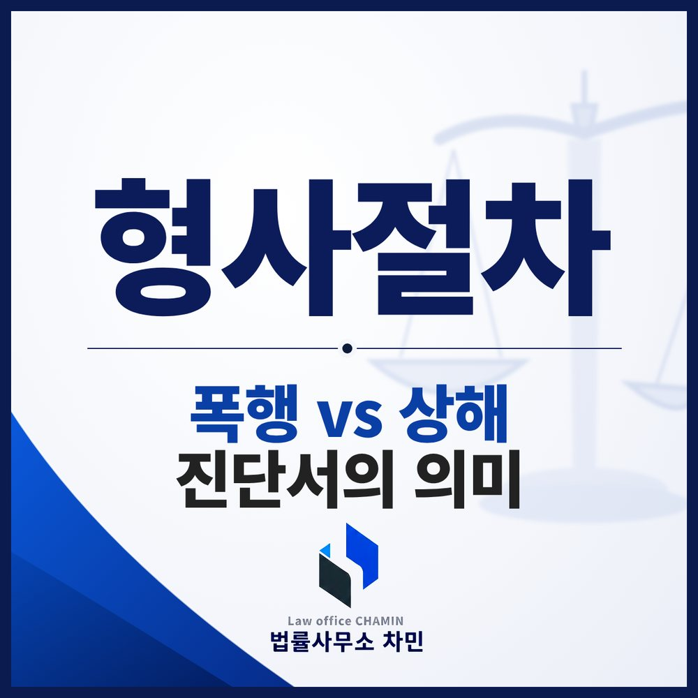

익산에서 몸싸움 끝에 상해로 조사를 받게 됐다면, 먼저 정말 상해에 해당하는지를 따져 봐야 합니다. 단순 폭행이라면 합의로 사건이 끝날 수 있지만, 상해가 인정되면 합의를 해도 처벌을 받을 수 있기 때문입니다.

폭행과 상해, 처벌이 이렇게 다릅니다
같은 몸싸움이라도 상대방이 다쳤는지에 따라 적용되는 죄와 처벌이 크게 달라집니다.
| 죄명 | 법정형 | 합의의 효과 |
|---|---|---|
| 폭행 (형법 제260조 제1항) | 2년 이하 징역, 500만 원 이하 벌금, 구류 또는 과료 | 피해자가 처벌을 원하지 않으면 공소 제기 불가 |
| 상해 (형법 제257조 제1항) | 7년 이하 징역, 10년 이하 자격정지 또는 1천만 원 이하 벌금 | 합의해도 처벌될 수 있음 (양형·처분에 참작) |
| 폭행치상 (형법 제262조) | 상해죄의 예에 따름 | 합의해도 처벌될 수 있음 |
| 특수폭행 (형법 제261조) | 5년 이하 징역 또는 1천만 원 이하 벌금 | 합의해도 처벌될 수 있음 |
| 특수상해 (형법 제258조의2 제1항) | 1년 이상 10년 이하 징역 | 합의해도 처벌될 수 있음, 벌금형 없음 |
가장 큰 차이는 합의의 효과입니다. 단순 폭행은 피해자의 처벌불원 의사만 있으면 사건이 끝나지만, 상해가 인정되면 합의를 해도 사건이 끝나지 않습니다. 그래서 상해로 조사를 받는다면, 정말 상해에 해당하는지부터 따져 볼 필요가 있습니다.
진단서가 있으면 모두 상해일까
수사 실무에서는 피해자가 상해진단서를 내면 상해로 입건하는 경우가 많습니다. 그러나 상해인지 아닌지는 진단서가 있느냐가 아니라, 피해자의 신체 건강 상태가 실제로 나빠지고 생활 기능에 장애가 생겼는지로 판단합니다.
판례는 극히 경미해서 굳이 치료할 필요가 없고, 자연적으로 치유되며, 일상생활에 지장이 없는 정도의 상처는 상해로 보지 않습니다. 예를 들어 동전 크기의 멍, 가벼운 뻐근함, 아주 작은 찰과상 같은 경우에는 진단서가 발급되었더라도 상해가 부정되고 폭행으로 판단될 여지가 있습니다.
상해를 다툴 때 살펴볼 것
- 진단 경위 — 사건 후 언제 진료를 받았는지, 피해자 진술만으로 진단이 나왔는지, 객관적 검사가 있었는지
- 실제 치료 내역 — 진단 주수와 달리 실제로 치료를 받았는지, 통원 횟수와 처방 내용은 어떤지
- 상처의 모습 — 사건 직후 사진, 현장 CCTV, 목격자 진술로 본 상처의 정도
- 인과관계 — 기존에 있던 질환이나 다른 원인으로 생긴 상처는 아닌지
- 행위 경위 — 상대방이 먼저 공격했는지, 방어하는 과정이었는지, 쌍방으로 다툰 것인지
이런 사정은 경찰 첫 조사에서부터 일관되게 설명해야 합니다. 상처가 경미하다는 주장만 하기보다, 진료 기록과 영상처럼 객관적인 자료로 뒷받침할 때 설득력이 생깁니다.
상해가 인정되는 사건이라면
상해가 인정되는 사건에서도 합의는 여전히 중요합니다. 처벌을 완전히 피할 수는 없더라도, 피해 회복과 처벌불원 의사는 기소유예나 벌금형처럼 처분과 형을 정하는 데 크게 반영됩니다. 피해자가 합의를 원하지 않거나 연락처를 알 수 없다면 형사공탁을 검토할 수 있습니다.
합의를 위해 피해자에게 직접 계속 연락하거나 찾아가면 협박이나 보복으로 오해받을 수 있습니다. 연락은 변호인을 통하는 것이 안전합니다.
익산에서 조사를 받는다면
익산에서 일어난 사건은 대개 익산경찰서가 수사하고, 송치되면 전주지방공소청 군산지청이 처분을 정하며, 기소되면 전주지방법원 군산지원에서 재판이 열립니다. 상해로 출석 요구를 받았다면 첫 조사 전에 진단서 내용과 당시 상황을 확인하고, 상해를 다툴지 인정하고 피해 회복에 집중할지 방향부터 정하는 것이 좋습니다.